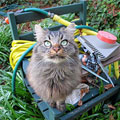
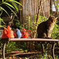
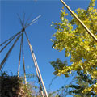

Extraits du livre de Raymond Queneau: Exercices de Style
L'arc-en-ciel
Un jour, je me trouvai sur la plate-forme d'un autobus violet.
Il y avait là un jeune homme assez ridicule: cou indigo, cordelière
au chapeau. Tout d'un coup, il proteste contre un monsieur bleu. Il
lui reproche notamment, d'une voix verte, de le bousculer chaque
fois qu'il descend des gens. Ceci dit, il se précipite, vers une
place jaune, pour s'y asseoir. Deux heures plus tard, je le
rencontre devant une gare orangée. Il est avec un ami qui lui
conseille de faire ajouter un bouton à son pardessus rouge.
Hésitations
Je ne sais pas très bien où ça se passait ... dans une église,
une poubelle, un charnier? Un autobus peut-être? Il y avait là ...
mais qu'est-ce qu'il y avait donc là? Des oeufs, des tapis, des
radis? Des squelettes? Oui, mais avec encore leur chair autour, et
vivants. Je crois bien que c'est ça. Des gens dans un autobus. Mais
il y en avait un (ou deux?) qui se faisait remarquer, je ne sais
plus très bien par quoi. Par sa mégalomanie? Par son adiposité? Par
sa mélancolie? Mieux ... plus exactement ... par sa jeunesse ornée
d'un long ... nez? menton? pouce? non: cou, et d'un chapeau étrange,
étrange, étrange. Il se prit de querelle, oui c'est ça, avec sans
doute un autre voyageur (homme ou femme? enfant ou vieillard?) Cela
se termina, cela finit bien par se terminer d'une façon quelconque,
probablement par la fuite de l'un des deux adversaires. Je crois
bien que c'est le même personnage que je rencontrai, mais où? Devant
une église? devant un charnier? devant une poubelle? Avec un
camarade qui devait lui parler de quelque chose, mais de quoi? de
quoi? de quoi?
Précisions
A 12h27, dans un autobus de la ligne S, long de 10 mètres,
large de 2,1, haut de 3,5, à 3 km. 600 de son point de départ, alors
qu'il était chargé de 48 personnes, à 12 h. 17, un individu de sexe
masculin, âgé de 27 ans 3 mois 8 jours, taille de 1 m 72 et pesant
65 kg et portant sur la tête un chapeau haut de 17 centimètres dont
la calotte était entourée d'un ruban long de 35 centimètres,
interpelle un homme âgé de 48 ans 4 mois 3 jours et de taille 1 m 68
et pesant 77 kg., au moyen de 14 mots dont l'énonciation dura 5
secondes et qui faisaient allusion à des déplacements involontaires
de 15 à 20 millimètres. Il va ensuite s'asseoir à quelque 2 m. 10 de
là.118 minutes plus tard il se trouvait à 10 mètres de la gare
Saint-Lazare, entrée banlieue, et se promenait de long en large sur
un trajet de 30 mètres avec un camarade âgé de 28 ans,taille 1 m. 70
et pesant 71 kg. qui lui conseilla en 15 mots de déplacer de 5
centimètres, dans la direction du zénith, un bouton de 3 centimètres
de diamètre.
Le côté subjectif

Je n'étais pas mécontent de ma vêture, ce jourd'hui.
J'inaugurai un nouveau chapeau, assez coquin, et un pardessus dont
je pensai grand bien. Rencontré X devant la gare Saint-Lazare qui
essaye de gâcher mon plaisir en essayant de me démontrer que ce
pardessus est trop échancré et que j'y devrais rajouter un bouton
supplémentaire. Il n'a tout de même pas osé s'attaquer àmon
couvre-chef. Un peu auparavant, rembarré de belle façon une sorte de
goujat qui faisait exprès de me brutaliser chaque fois qu'il passait
du monde, à la descente ou à la montée. Cela se passait dans un de
ces immondes autobi qui s'emplissent de populus précisément aux
heures où je dois consentir à les utiliser.
Autre subjectivité

Il y avait aujourd'hui dans l'autobus à côté de moi, sur la
plate-forme, un de ces morveux comme on n'en fait guère,
heureusement, sans ça je finirais par en tuer un. Celui-là, un gamin
dans les vingt-six, trente ans, m'irritait tout spécialement non pas
tant à cause de son grand cou de dindon déplumé que par la nature du
ruban de son chapeau, ruban réduit à une sorte de ficelle de teinte
aubergine. Ah! le salaud! Ce qu'il me dégoütait! comme il y avait
beaucoup de monde dans notre autobus à cette heure-là, je profitais
des bousculades qui ont lieu à la montée ou à la descente pour lui
enfoncer mon coude entre les côtelettes. Il finit par s'esbigner
lâchement avant que je me décide à lui marcher un peu sur les
arpions pour lui faire les pieds. Je lui aurais dit aussi, afin de
le vexer, qu'il manquait un bouton à son pardessus trop échancré.
Négativités

Ce n'était ni un bateau, ni un avion, mais un moyen de
transports terrestre. Ce n'était ni le matin, ni le soir, mais midi.
Ce n'était ni un bébé, ni un vieillard, mais un homme jeune. Ce
n'était ni un ruban, ni une ficelle, mais du galon tressé. Ce
n'était ni une procession, ni une bagarre, mais une bousculade. Ce
n'était ni un aimable, ni un méchant, mais un rageur. Ce n'était ni
une vérité, ni un mensonge, mais un prétexte. Ce n'était ni un
debout, ni un gisant, mais un voulant-être assis. Ce n'était ni la
veille, ni le lendemain, mais le jour même. Ce n'était nila gare du
nord, ni la gare de l'est mais la gare Saint-Lazare. ce n'était ni
un parent, ni un inconnu, mais un ami. Ce n'était ni une injure, ni
une moquerie, mais un conseil vestimentaire.
Homéotéleutes
Un jour de canicule sur un véhicule où je circule, gesticule
un funambule au bulbe minuscule, à la mandibule en virgule et au
capitule ridicule. Un somnambule l'accule et l'annule, l'autre
articule: "crapule", mais dissimule ses scrupules, recule, capitule
et va poser ailleurs son cul.Une hule aprule, devant la gule
Saint-Lazule je l'aperçule qui discule à propos de boutules, de
boutules de pardessule.